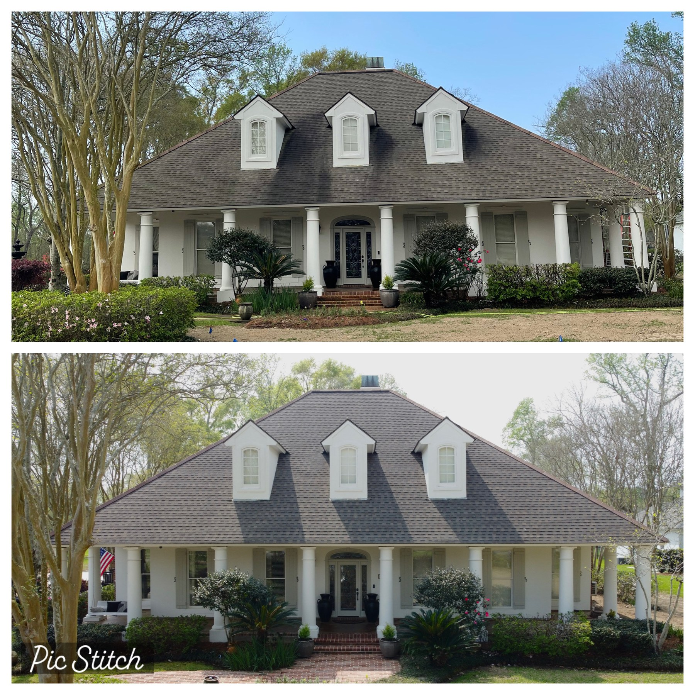

01 · Soft washing
Low pressure for surfaces that need care.
Soft washing uses a cleaning solution and lower water pressure to remove algae, mildew, and organic buildup without blasting shingles, paint, or delicate exterior finishes.
- Roofs
- Painted surfaces
- Vinyl siding
- Porches

Shingle roof · before / after